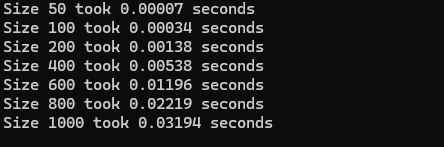
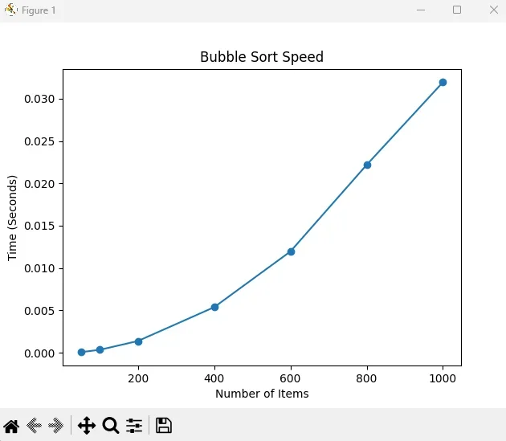
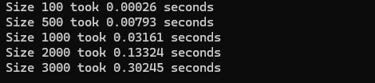
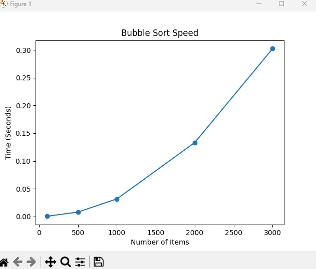

Unit 3 / Python
Bubble Code Algorithm
A Python script that times Bubble Sort on lists of increasing size, with the results and a comparison with Quicksort.
Write-up
For this task, I wrote a Python script to see how Bubble Sort handles different amounts of data. I started with a "tool chest" of imports like random to get my numbers and matplotlib to help me see the speed on a graph.
The sorting that takes place happens in two different loops. First, my code makes a copy of the list to work with, so the original list isn’t damaged. The outer loop is looking at the entire data set, checking for swaps that have been made. Inside that is a smaller loop that is the piston of this sorting engine. It compares pairs or adjacent numbers. If the number on the left is larger, the script swaps them so the smaller one comes first. I also learned that it is important to add a check see if the list is already sorted. If no changes are made that means it is already sorted so my code can stop early. This means the algorithm doesn't have to keep running if the work is already done (GeeksforGeeks, 2023).
Running my code through CMD prompt my test results demonstrated a massive difference in speed when the list gets larger. The time difference was significant even thought I wasn’t using an extremely large dataset. For small datasets, the algorithm was very quick:
- Size 50 took only 0.00007 seconds.
- Size 100 took about 0.00034 seconds.
As the list grows, the time launches upward. At 1,000 items, it took 0.03194 seconds, not bad, but at 3,000 items, it jumped way up to 0.30245 seconds. The Bubble Sort has a quadratic growth represented by O(n2). My graph shows this clearly because the line curves up steeply.
Comparison and Real-World Use
Bubble Sort is a beginner code that can be broken down for easier understanding. It is not a code that can be used for larger, more complex operations. Quicksort runs in O(n log n) time (Khan Academy, 2024). This is more of a rolling hills graph when plotted out. Quicksort uses partitioning. It reminds me of picking teams in gym class. Everything smaller is on the left and everything larger on the right. This means Quicksort scales at a rate that would be roughly 100x faster than the Bubble Sort code I wrote.
In the real world, Bubble Sort is given as a beginner code to understand how algorithms work. It is mostly used for teaching beginners or for tiny datasets that are already nearly sorted (GeeksforGeeks, 2023). For production software or big databases, Quicksort is the standard because it uses a "divide and conquer" strategy to handle millions of items efficiently (Khan Academy, 2024).
Test output

Text description of Figure 1
Size 50 took 0.00007 seconds. Size 100 took 0.00034 seconds. Size 200 took 0.00138 seconds. Size 400 took 0.00538 seconds. Size 600 took 0.01196 seconds. Size 800 took 0.02219 seconds. Size 1000 took 0.03194 seconds.

Text description of Figure 2
The graph plots the values in the text description of Figure 1. The horizontal axis is the number of items, from 50 to 1000. The vertical axis is time in seconds, from 0 to about 0.032.

Text description of Figure 3
Size 100 took 0.00026 seconds. Size 500 took 0.00793 seconds. Size 1000 took 0.03161 seconds. Size 2000 took 0.13324 seconds. Size 3000 took 0.30245 seconds.

Text description of Figure 4
The graph plots the values in the text description of Figure 3. The horizontal axis is the number of items, from 100 to 3000. The vertical axis is time in seconds, from 0 to about 0.30.
The script
import random
import time
import matplotlib.pyplot as plt
def bubble_sort(arr):
# Create a copy of the list
data_copy = arr[:]
n = len(data_copy)
for i in range(n):
swapped = False
for j in range(0, n - i - 1):
if data_copy[j] > data_copy[j + 1]:
# Swap the elements
data_copy[j], data_copy[j + 1] = data_copy[j + 1], data_copy[j]
swapped = True
if not swapped:
break
return data_copy
def main():
random.seed(42)
# The sizes of lists we want to test
sizes = [100, 500, 1000, 2000, 3000]
times_taken = []
for n in sizes:
# Create random data
test_data = [random.randint(0, 1000) for _ in range(n)]
# Start timer
start = time.perf_counter()
bubble_sort(test_data)
end = time.perf_counter()
duration = end - start
times_taken.append(duration)
print(f"Size {n} took {duration:.5f} seconds")
# Create the graph
plt.plot(sizes, times_taken, marker="o")
plt.title("Bubble Sort Speed")
plt.xlabel("Number of Items")
plt.ylabel("Time (Seconds)")
plt.show()
if __name__ == "__main__":
main()References
- GeeksforGeeks (2023) Bubble Sort Algorithm. Available at: https://www.geeksforgeeks.org/bubble-sort/ (Accessed: 11 February 2025).
- Khan Academy (2024) Quick Sort. Available at: https://www.khanacademy.org/computing/computer-science/algorithms/quick-sort/a/overview-of-quicksort (Accessed: 11 February 2025).